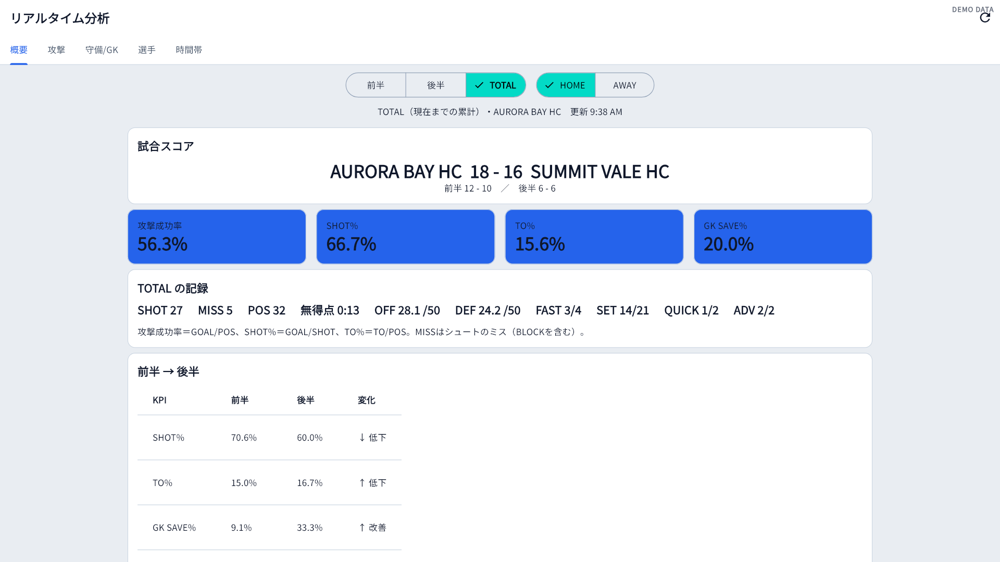
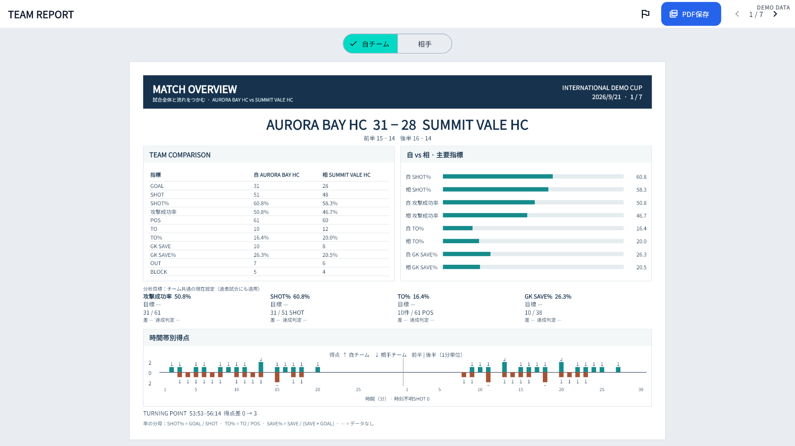
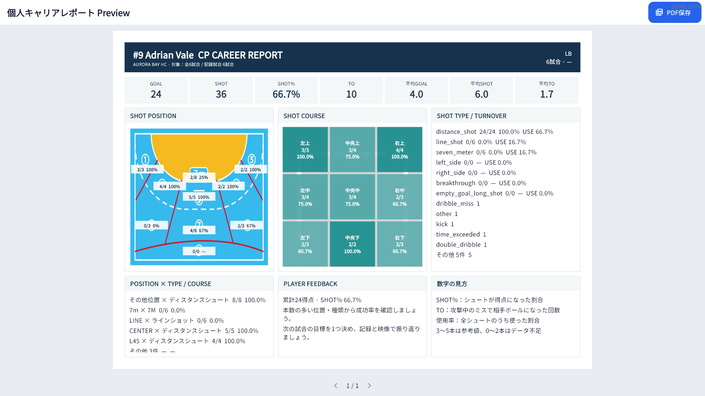
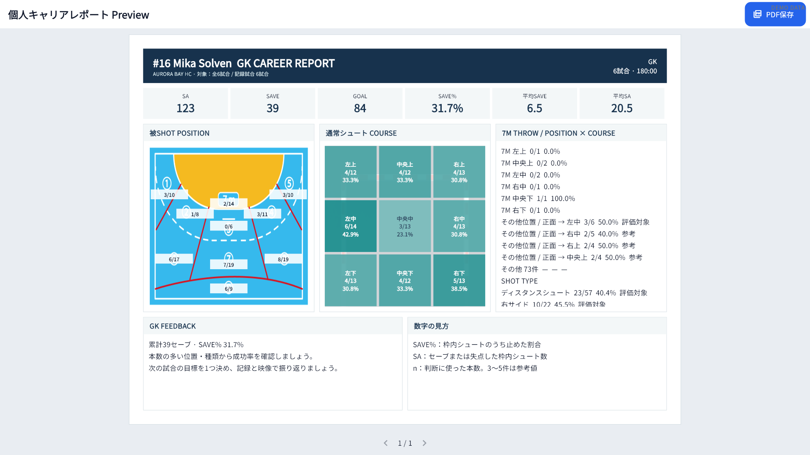
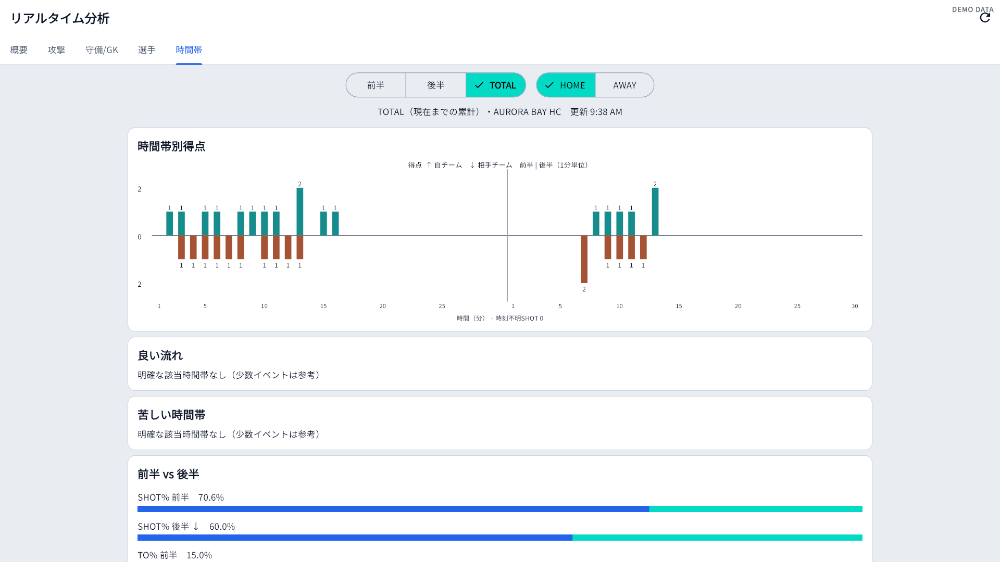
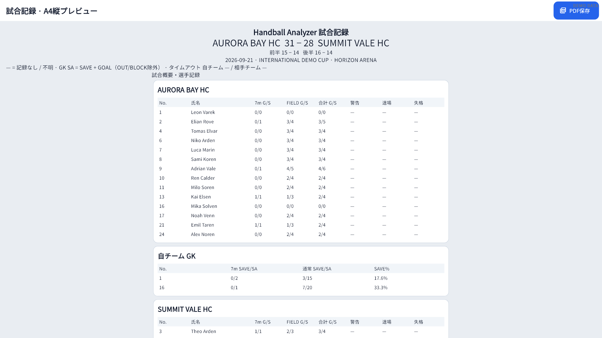

Broadcast-style dark design
A consistent, high-contrast visual system across match input, live analysis, results and reports.
HANDBALL MATCH ANALYSIS
Handball Analyzer brings live match recording, team and player analysis, goalkeeper analysis and PDF reports together in one Windows application.
Install securely from Microsoft Store. PRO is available as an in-app subscription.

VERSION 1.1 / LATEST UPDATE
Version 1.1 refreshes the main experience while preserving existing data, backups and reports.
A consistent, high-contrast visual system across match input, live analysis, results and reports.
Larger controls and a clearer recording flow help operators work quickly during live matches.
Comparison bars, heat maps, shot courses, scoring timelines and player tables make trends easier to spot.
The app follows the Windows language on first use and can be switched at any time in Settings.
Microsoft Store rollout timing can vary by device and region.
CORE FEATURES
Record SHOT, turnover, goalkeeper events, suspensions and corrections. The same data powers live and post-match analysis.
Select a player and shot position, then record the result. Undo and history editing help correct mistakes.

Follow shot percentage, attack efficiency, turnover rate, goalkeeper save rate and match momentum.

Compare attack, defense, shots, goalkeepers and scoring periods for both teams.

Track goals, shots, efficiency, turnovers, positions and courses across multiple matches.

Review save percentage, shot position, shot type and course patterns.

See first-half and second-half scoring momentum at one-minute resolution.

Preview reports with FREE and save PDF files with PRO for meetings and sharing.
PRODUCT IN MOTION
Watch players, shot positions and outcomes being recorded courtside. These videos show how Handball Analyzer fits into the flow of a live match.
Follow the action and record the player, shot position and result from courtside.
Select the information needed during the match from a single screen.
Recorded events are immediately reflected in the score and key performance indicators.
WORKFLOW
Move from match preparation to live decisions and post-match review without re-entering data.
FREE / PRO
FREE includes match recording and the main analysis tools. PRO removes the match limit and enables PDF file saving.
| Feature | FREE | PRO |
|---|---|---|
| Saved matches | 1 match | Unlimited |
| Match recording | Included | Included |
| Live analysis | Included | Included |
| Team and player analysis | Included | Included |
| PDF preview | Included | Included |
| Save PDF files | Not included | Included |
| Price | Free | JPY 5,000 / month |
Install from Microsoft Store and start with one saved match.
Install freePurchase from Plans & Purchase inside the installed app.
JPY 5,000 / monthLANGUAGE
Version 1.1 supports Japanese and English. On first use, non-Japanese Windows environments open in English. You can switch languages at any time from Settings.
YOUR DATA
Match, team and player data are stored locally on the user's computer. The app does not send match data to nunoken servers or external AI services.
Privacy policyYour match, team and player records are stored on your computer.
Create backup files and restore them when needed.
Safety backups are created at important points such as startup and match completion.
The app checks database integrity and guides recovery if a problem is detected.
FAQ
Key information for evaluating Handball Analyzer.
Yes. Version 1.1 supports Japanese and English. Change the display language from Settings.
FREE includes match recording, live analysis, team and player analysis, and PDF preview, with one saved match.
Match, team and player data are stored locally on your PC. Backup and restore tools are included.
Recording and local analysis work on your PC. Microsoft Store connectivity is required for installation, PRO purchase and licence refresh or restore.
Windows 10 and Windows 11 are supported. A smartphone version is not currently available.
START WITH FREE
Install Handball Analyzer and explore match recording, live analysis, team and player reports, and PDF preview.